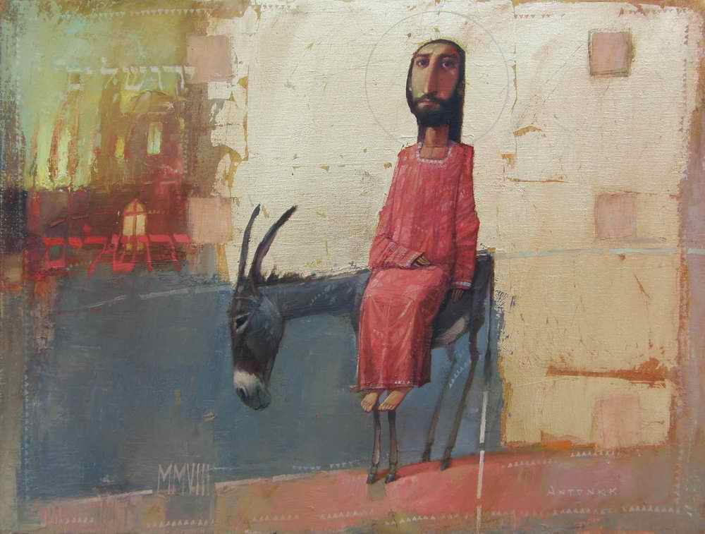
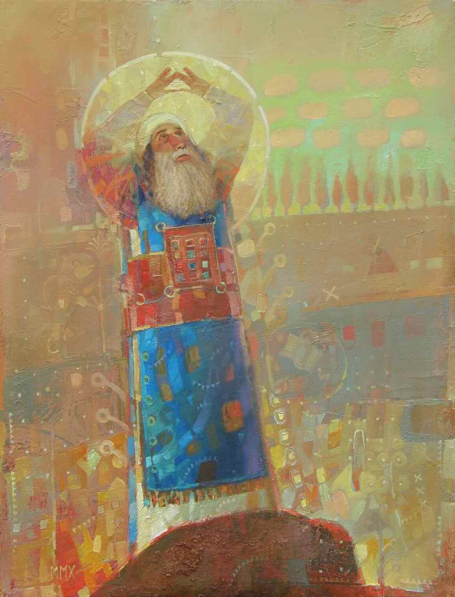
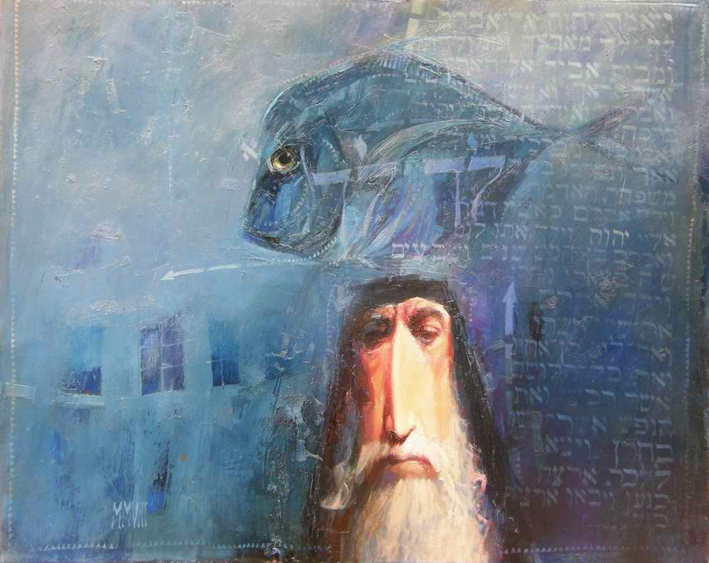
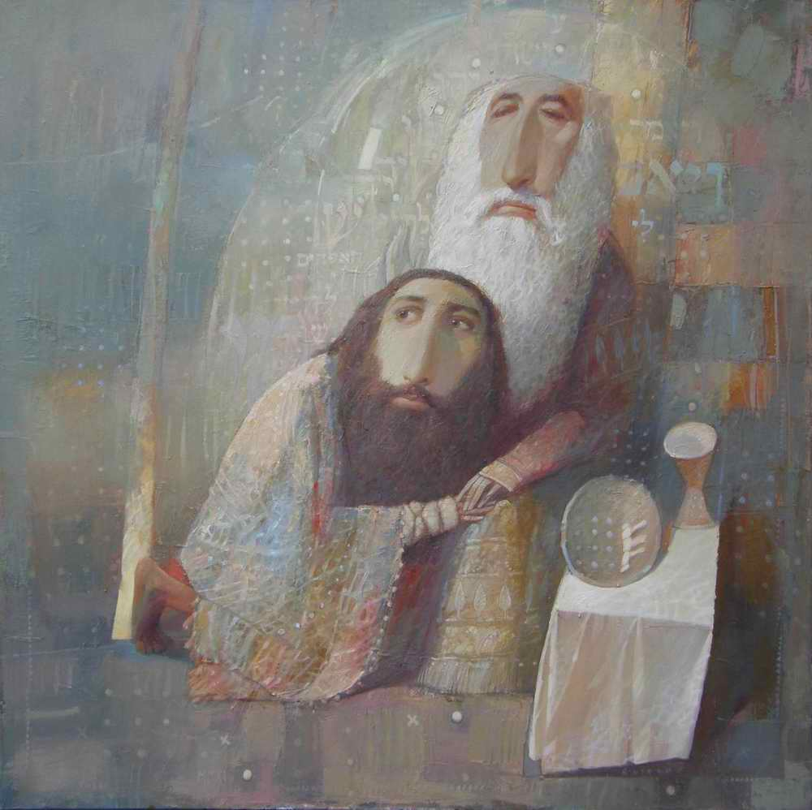
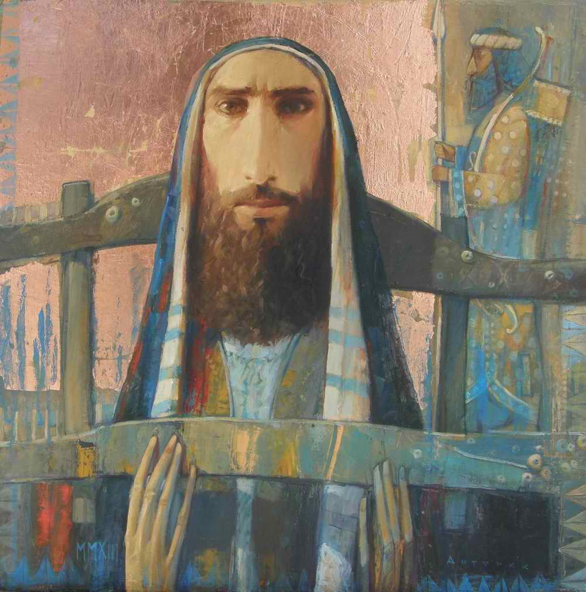
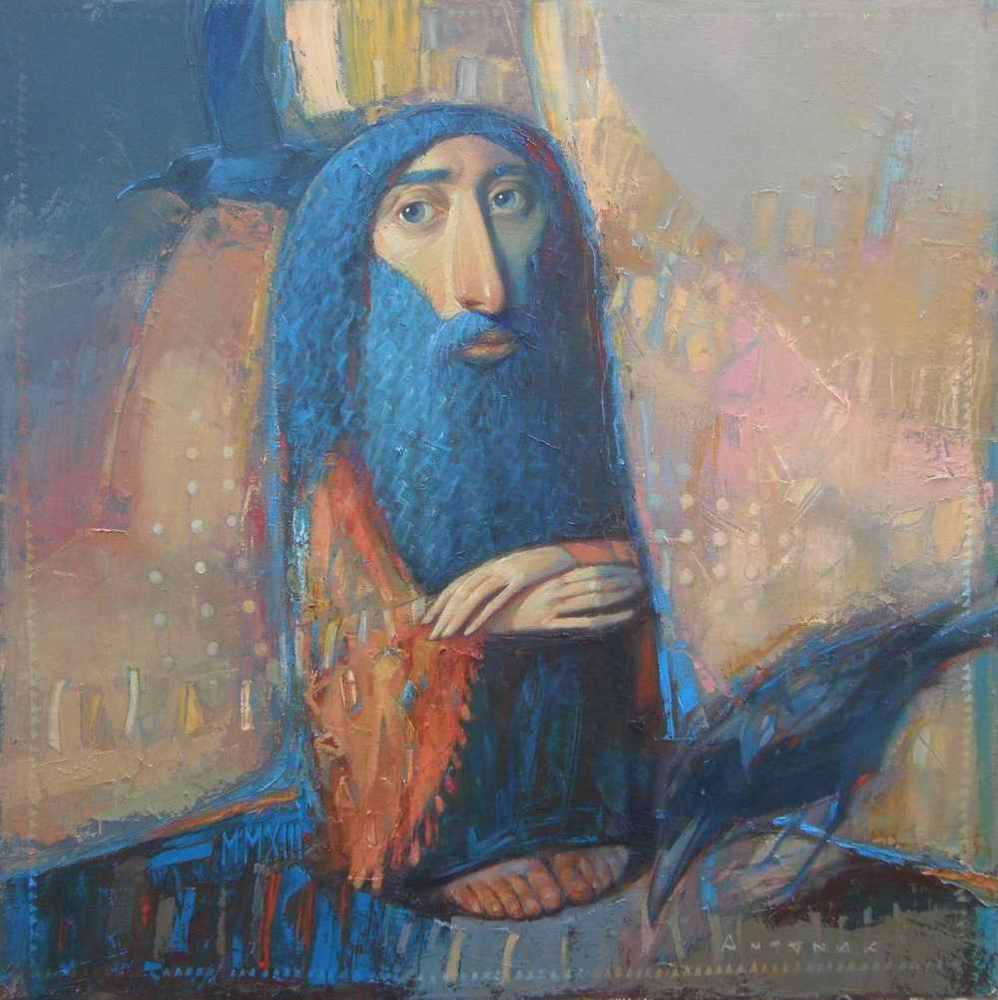
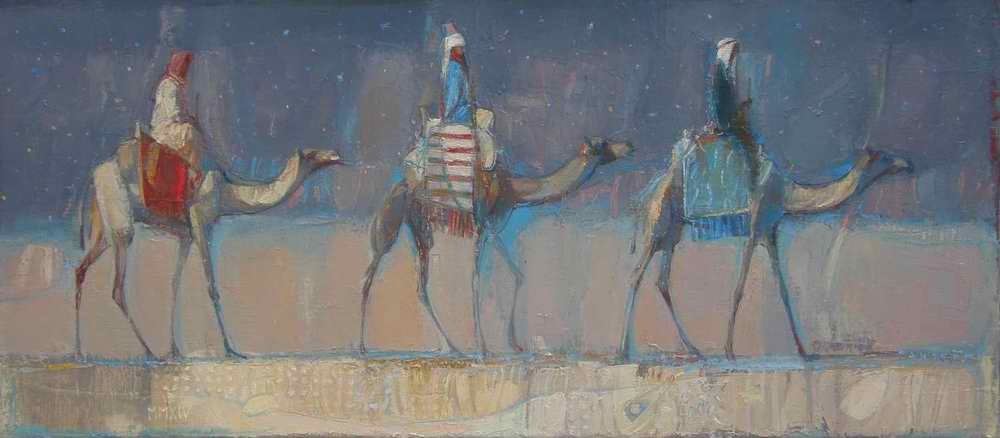

Александр Антонюк. Вера не может мешать художнику
В Библии и сейчас для меня не всё понятно, но зато всё «вкусно». Живопись помогает мне «пережёвывать» прочитанное. В работах часто появляются «случайности», которые добавляют новую грань в раскрытии какой либо темы или образа.
Вера не может мешать художнику.
Мой гость – замечательный и очень интересный украинский художник Александр Антонюк. /стр. Александра в ф.б./

Родом Александр из г. Каменец-Подольский. Закончил Прикарпатский университет им. В. Стефаника, факультет изобразительного искусства и черчения. Сейчас Александр живет и работает в городе Хмельницкий. Работы художника находятся в частных собраниях и различных галереях в стране и за рубежом. Александр Антонюк – член Национального союза художников Украины.
Излюбленные темы творчества Александра Антонюка – это библейские, исторические и сказочно-фантастические сюжеты.
Библейские герои Ветхого и Нового Заветов изображены художником с особой любовью и благоговением.
Александр любезно согласился ответить на мои вопросы:
Эфраим Калиш: Александр, персонажи в Ваших библейских работах выбиваются из среднестатистического представления о них – в них нет закатанных к небу глаз, нет величия гигантов. Они очень человечны и воспринимают сами себя как бы с легкой с иронией.
Александр Антонюк: Сказочные персонажи живут в сказках... Люди с которыми встречаешься в Писании - реальные и живые. Их сила и величие не в них самих, а в Творце.

Эфраим Калиш: Есть многовековая традиция - изображать библейских персонажей близкими к культуре народа, в которой творит художник. Ваши Христос и самаритянка в вышиванках. Это само по-себе вызывает улыбку. Что для вас – «украинизация» библейских персонажей?

Александр Антонюк: Через знакомую узнаваемую «форму», знакомый «язык» я хочу приблизить зрителя к событиям, описанным в Писании… Предлагаю отнестись к событию, происшедшему когда-то, как к такому, что происходит здесь и сейчас …
Эфраим Калиш: Как бы Вы могли в нескольких словах охарактеризовать свой подход к библейской теме в вашем творчестве? Что для Вас Библия? Чем она привлекает вас в творческом плане?

Александр Антонюк: Очень сложно серьёзно отвечать на серьёзные вопросы… С детства я знал, что Бог есть…. Это была некая данность … Как результат мне было интересно узнать – Кто Он и зачем я. Библия тоже не была результатом анализа и метаний… И хотя в ней и сейчас не всё понятно, но зато всё «вкусно»…
Живопись помогает мне «пережёвывать» прочитанное. В работах часто появляются «случайности», которые добавляют новую грань в раскрытии какой либо темы или образа.
Эфраим Калиш: Как объясняется ваш интерес к так называемому Ветхому завету и его героям? Обычно среднестатистического христианина не очень занимают «такие древности».
Александр Антонюк: Современный мир с его ритмом и поверхностным отношением к любой «информации» не щадит даже христиан… :)
Те, кого не интересует Ветхий Завет, - на самом деле не интересуются и Новым Заветом…
«И, начав от Моисея, из всех пророков изъяснял им сказанное о Нем во всем Писании …».
Понимание корней учения даёт дополнительные оттенки и глубину знакомым словам, добавляет освещения… В Писании нет лишних слов. Кто это понимает, старается вникать в каждое СЛОВО.
Эфраим Калиш: Не могли бы вы рассказать о некоторых из своих библейских работах?

Александр Антонюк: В процессе работы бывают «случайности», о которых я вспоминал ранее. Например, когда я писал «Молодой лев Иуда», на теле льва на иврите я написал «Йеhуда». Буква «далет» легла на прямоугольное пятно… Я обратил внимание, что без этой буквы остаются четыре – те четыре, из которых складывается Имя Творца. «Далет» по начертанию напоминает дверь, в сочетании с пятном «дверь» проявилась более отчетливо… Так в самом имени Иуда для меня открылось пророчество о Мессии из колена Иуды. Иврит – уникальный язык.
более подробно об этом здесь

Эфраим Калиш: Еврейская тема проходит пунктиром в вашем творчестве - «Обещанный трамвай», «Мальчик, играющий на скрипке». В некоторых ваших работах присутствуют специфические детали и подробности, не известные широкой нееврейской аудитории: например, сложенные особым образом руки Аарона для благословения коэнов - буквой шин.

Александр Антонюк: Глубоко я не копал :), но это можно объяснить влиянием «природной маслины». Иврит я пытался учить самостоятельно, но это не с моим усердием :)... так знаю несколько слов.
Эфраим Калиш: Существуют разные сакраментальные знаки (греческие, китайские, санскрит... :). В чем причина использования вами преимущественно знаков древнееврейского алфавита даже в сюжетах не связанных с Писанием? Что для Вас несут в себе эти символы?

композитор Даниэль Круглов /интерпретация к нед.гл.Торы "Behar-Bechukotai"/
Александр Антонюк: Ну во-первых это красиво..))
Дело в том, что вместе с образом буквы несут и смысл сам по себе…это и код творения, что-то вроде ДНК. Иногда они у меня переплетаются с простыми геометрическими формами – круг, треугольник, квадрат. Это своего рода подсказки в картине для определения «направления»…

Анатомия феникса - это не иллюстрация к мифу, а просто некий образ (как и «вышиванка») для выражения некоторого ощущения… это сотворённый мир, - мир, который как бы возник из пепла… «Земля же была безвидна и пуста, и тьма над бездною…». Не от понимания, но от ощущения там же и два написания буквы «мем», открытая и закрытая.
Эфраим Калиш: Приходилось ли вам создавать монументальные проекты, фрески... Каков размер ваших произведений?
Александр Антонюк: «Монументальные проекты» я создавал в армии. Это было время, когда ленинские комнаты переделывались в комнаты отдыха. В основном, все мои работы до метра, но бывают и исключения.


Эфраим Калиш: Некоторые ваши работы, имеют несколько вариантов: один вариант решен в мягкой пастельной гамме, а другой - в жестких активных цветах. Это связано с пожеланием заказчика или ставились разные?
Александр Антонюк: Это зависит только от настроения. Есть темы, к которым иногда хочется вернуться, но с новым багажом ощущений и навыков. Примером может быть и «Анатомия феникса» и «Последнее чаепитие в Едене (Раю)».
С одной из выставок Александра Антонюка
Эфраим Калиш: К сожалению, это встречается не так часто, чтобы художник высокого уровня дружил с Библией. К большому сожалению, сегодня эти вещи идут врозь. Что Вы думаете, почему сегодня вера мешает художнику?
Александр Антонюк: Мне сложно ответить за других художников, но мне кажется что у людей, ныряющих в Писание, возможно, нет потребности рисовать, а те кто может это делать, - не хотят погружаться... Вера не может мешать художнику... Другой вопрос - какие цели ставит для себя художник. Если преуспеть, тогда он будет зависеть от "спроса", который формируют люди продающие искусство...




Смотрите также другое интервью с Александром Антонюком:
записал: Эфраим Калиш